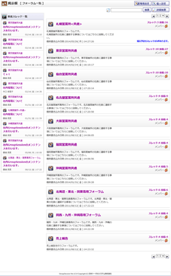
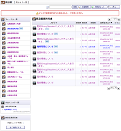
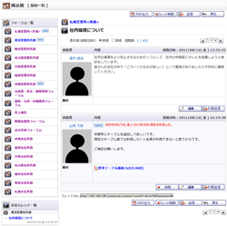
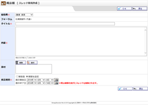
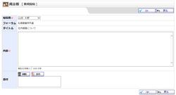
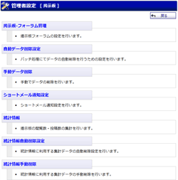
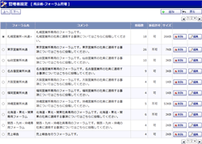
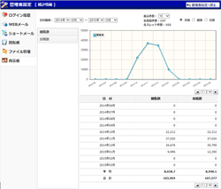

|  |
フォーラム一覧
フォーラムを一覧表示します。 新着情報や最新書込み時間を把握することができます。 |
|---|---|
|  |
スレッド一覧
フォーラムに属するスレッドを一覧表示します。 |
|  |
投稿一覧
スレッドに対する投稿を一覧表示します。 |
|  |
スレッド新規作成
・
スレッド編集
スレッド新規作成確認 ・ スレッド編集確認 フォーラムに属するスレッドを作成・編集します。 |
|  |
新規投稿
・
投稿編集
新規投稿確認 ・ 投稿編集確認 スレッドに対する投稿を作成・編集します。 |
 |
詳細検索
掲示板データを検索します。 |
 |
検索結果一覧
検索結果を表示します。 |
 |
フォーラムメンバー一覧
フォーラムに所属するユーザの一覧を表示します。 |
|  |
管理者設定メニュー
管理者グループに所属するユーザのみ使用可能な機能のメニュー画面です。 |
|  |
フォーラム管理
フォーラムの管理を行います。 |
 |
フォーラム登録
・
編集
フォーラム登録確認 ・ 編集確認 フォーラムを追加・編集します。 |
 |
自動データ削除設定
期間を設定し過去の掲示板データを自動削除するように設定することができます。 |
 |
手動データ削除設定
期間を設定し過去の掲示板データを手動削除するように設定することができます。 |
 |
管理者設定 ショートメール通知設定
掲示板に関するショートメール通知設定をすることができます。 |
|  |
統計情報
掲示板の統計情報を確認することができます。 |
 |
個人設定メニュー
掲示板に関する個人設定をすることができます。 |
 |
個人設定 表示設定
掲示板に関する表示設定をすることができます。 |
 |
個人設定 メイン表示設定
掲示板に関するメイン表示設定をすることができます。 |
 |
個人設定 ショートメール通知設定
掲示板に関するショートメール通知設定をすることができます。 |